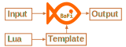

BaFi
Universal JSON, BSON, YAML, CSV, XML translator to ANY format using templates
Github repository - https://github.com/mmalcek/bafi
Releases (Windows, MAC, Linux) - https://github.com/mmalcek/bafi/releases
Key features
- Various input formats (json, bson, yaml, csv, xml)
- Flexible output formatting using text templates
- Support for Lua custom functions which allows very flexible data manipulation
- stdin/stdout support which allows get data from source -> translate -> delivery to destination. This allows easily translate data between different web services like REST to SOAP, SOAP to REST, REST to CSV, ...



Command line arguments
- "-i input.xml" Input file name. If not defined app tries read stdin
- "-o output.txt" Output file name. If not defined result is send to stdout
- "-t template.tmpl" Template file. Alternatively you can use inline template
- inline template must start with ? e.g. -t "?{{.someValue}}"
- "-f json" Alternative input format.
- Supported formats: json, bson, yaml, csv, xml (default)
- "-v" - Show current verion
- "-?" - list available command line arguments
Example: (more examples)
bafi.exe -i testdata.xml -t template.tmpl -o output.txt
Templates
Bafi uses text/template. Here is a quick summary how to use. Examples are based on testdata.xml included in project
Comments
{{/* a comment */}}
{{- /* a comment with white space trimmed from preceding and following text */ -}}
Trim new line
New line before or after text can be trimmed by adding dash
{{- .TOP_LEVEL}}, {{.TOP_LEVEL -}}
Accessing data
Data are accessible by pipline which is represented by dot
- Simplest template
{{.}}
- Get data form inner node
{{.TOP_LEVEL}}
- Get data from XML tag. XML tags are autoprefixed by dash and accessible as index
{{index .TOP_LEVEL "-description"}}
- Convert TOP_LEVEL node to JSON
{{toJSON .TOP_LEVEL}}
Variables
You can store selected data to template variable
{{$myVar := .TOP_LEVEL}}
Actions
Template allows to use actions, for example
Iterate over lines
{{range .TOP_LEVEL.DATA_LINE}}{{.val1}}{{end}}
If statement
{{if gt (int $val1) (int $val2)}}Value1{{else}}Value2{{end}} is greater
Functions
In go template all data manipulation is done by using functions for example
count val1+val2
{{add $val1 $val2}}
count (val1+val2)/val3
{{div (add $val1 $val2) $val3}}
There are 3 categories of functions
Native functions
text/template integrates native functions to work with data
Additional functions
Asside of integated functions bafi contains additional common functions
- add - {{add .Value1 .Value2}}
- add1 - {{add1 .Value1}} = Value1+1
- sub - substract
- div - divide
- mod - modulo
- mul - multiply
- randInt - return random integer {{randInt .Min .Max}}
- add1f - "...f" functions parse float but provide decimal operations using shopspring decimal
- addf
- subf
- divf
- mulf
- round - {{round .Value1 2}} - will round to 2 decimals
- max - {{round .Value1 .Value2 .Value3 ...}} get Max value from range
- min - get Min value from range
- maxf
- minf
- dateFormat -> {{dateFormat .Value "oldFormat" "newFormat"}} - GO time format
- now - {{now "02.01.2006"}} - GO format date (see notes below)
- b64enc - encode to base64
- b64dec - decode from base64
- b32enc - oncode to base32
- b32dec - decode from base32
- uuid - generate UUID
- regexMatch - {{regexMatch pattern .Value1}} more about go regex
- contains - check if string contains substring e.g. {{contains "aaxbb" "xb"}}
- upper - to uppercase
- lower - to lowercase
- addSubstring - {{addSubstring $myString, "XX", $position}} add substring to $position in string (if $position is 1,2,3 = Adding from right, if -1,-2,-3 = Adding from left)
- trim - remove leading and trailing whitespace
- trimPrefix - {{trimPrefix "!Hello World!" "!"}} - returns "Hello World!"
- trimSuffix - {{trimSuffix "!Hello World!" "!"}} - returns "!HelloWorld"
- trimAll - {{trimAll "!Hello World!" "!"}} - returns "Hello World"
- atoi - {{atoi "42"}} - string to int
- toInt - {{int "42"}} - cast to int
- toInt64 - {{int64 "42"}} - cast to int64
- toFloat64 - {{float64 "3.14159"}} - cast to float64
- toDecimal - {{toDecimal "3.14159"}} - cast to decimal (if error return 0)
- toDecimalString - {{toDecimalString "3.14159"}} - cast to decimal string (if error return "error message")
- toJSON - convert input object to JSON
- toBSON - convert input object to BSON
- toYAML - convert input object to YAML
- toXML - convert input object to XML
- isBool - {{isBool .Value1}} - check if value is bool
- isInt - {{isInt .Value1}} - check if value is int
- isFloat64 - {{isFloat64 .Value1}} - check if value is float64
- isString - {{isString .Value1}} - check if value is string
- isMap - {{isMap .Value1}} - check if value is map
- isArray - {{isArray .Value1}} - check if value is array
- mustArray - {{mustArray .Value1}} - convert to array. Useful with XML where single node is not treated as array
- mapJSON - convert stringified JSON to map so it can be used as object or translated to other formats (e.g. "toXML"). Check template.tmpl for example
Lua custom functions
You can write your own custom lua functions defined in ./lua/functions.lua file
Call Lua function in template ("sum" - Lua function name)
{{lua "sum" .val1 .val2}}
- Input is always passed as stringified JSON and should be decoded (json.decode(incomingData))
- Output must be passed as string
- lua table array starts with 1
- Lua documentation
Minimal functions.lua example
json = require './lua/json'
function sum(incomingData)
dataTable = json.decode(incomingData)
return tostring(tonumber(dataTable[1]) + tonumber(dataTable[2]))
end
Check examples and template.tmpl and testdata.xml for advanced examples